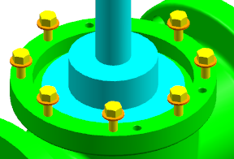
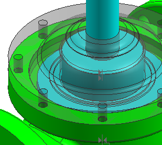

编辑外罩(housing)孔阵列-可选
-
在 des02_valve_housing 中创建一个部件间表达式，让圆形阵列(54) 数量参数链接到 des02_valve_yoke 中，如下所示。
完成的部件间表达式："des02_valve_yoke"::p98
提示
要开始这个步骤，选择工具→表达式，然后点击创建单个部件间表达式
 。
。下图显示的是编辑前的 des02_valve_housing。des02_valve_yoke 组件已被隐藏，以便您可以看清，即使组件阵列有8个实例，但是 des02_valve_housing 中孔的数量仍然是6，部件间表达式可以修正这个问题。

下图显示的是应用部件间表达式后的 des02_valve_housing。des02_valve_housing现在匹配了组件阵列中的实例数。des02_washer 和 des02_hex_bolt 被隐藏了。

-
关闭所有部件。